Stiftsmuseum Maribo
2 Runensteine
Skovlænge
Grobkörniger, rötlicher Granit mit weißen Adern und Korn aus Quarz
Höhe ü. d. Erde: 140 cm
Breite (vorne): 106 cm
Runenhöhe: 15 - 21 cm
Runeninschrift
Astrath errichtete diesen Stein zum Andenken an Iuti, seinen Vater, einen sehr wohlgeborenen "Thegn".
Sædinge
Grobkörniger, grauer Granit
Höhe über der Erde: 174 cm
Größte Breite: 79 cm
Größte Dicke: 68 cm
Runenhöhe: 9,5 - 25 cm
Runeninschrift
Thorwi ließ diesen Stein machen (zum Andenken an) Krok, ihren Gatten; und er war (damals?) der allerstärkste (?) der "Sonderschweden" (d.h. der Schweden, die sich von den Schweden im Heimatlande abgesondert hatten) und der Süddänen.
Qual (d.h. Leiden) verzehrte den Häuptling (oder ihn) (d.h. machte seinem Leben ein Ende), den besten der Nordmänner (?). Er war... der "Sonderschweden" ...
Maribo - Stiftsmuseum - Letztes Update 15.10.2024
Navidaten: 54.77621 11.50189 oder: Banegårdpladsen 11, 4930 Maribo
"Wulfstan sagte, dass er von Haithabu reiste,
dass er nach sieben
Tagen und Nächten nach Truso kam
und dass das Schiff die ganze Fahrt über
unter Segel stand.
Wendland war auf Steuerbord, Langeland auf Backbord,
auch Lolland und Falster und Scania (Schonen),
und alle diese Länder gehören zu Dänemark."
aus
Wulfstans Reisebeschreibung
Dies ist ein Luftfoto vom 19.05.2023 von Skråfoto, das das Stiftsmuseum in Maribo zeigt (Bild von mir zugeschnitten). Skråfoto ist eine Webanwendung, die von der Dänische Agentur für Datenversorgung und Infrastruktur weltweit kostenlos bereitgestellt wird - frei von Urheberrechten. Die Aufnahmen werden alle zwei Jahre erneuert und neben einer Senkrechtaufnahme wird ein Schrägbild aus jeder Himmelsrichtung angeboten, das man über eine Adresssuche aufrufen kann. Gerade bei dieser Aufnahme zeigt sich der Vorteil gegenüber herkömmlichen Luftfotos, wie z.B. Google Maps / Bing usw. Dort gibt es nur eine senkrechte Draufsicht, während ich hier die Richtung mit Blick zum Eingang auswählen kann und habe das dann auch noch in deutlich besserer Qualität / Auflösung!
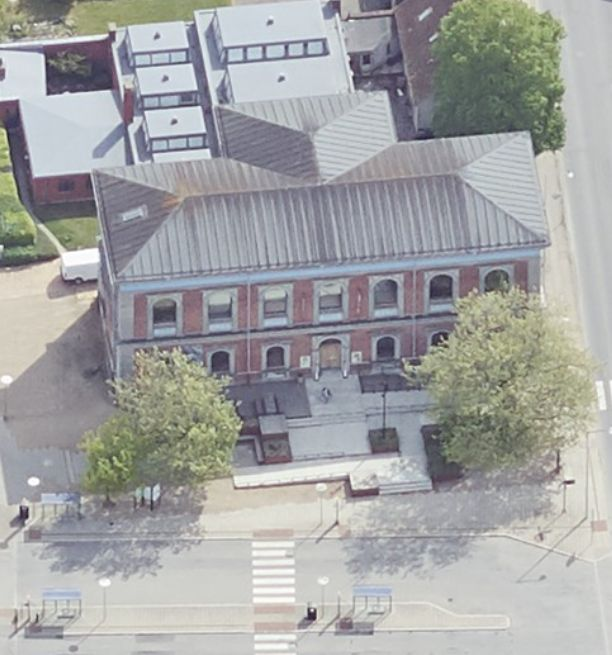
Link zur Homepage des Museums
Ab Freitag, 31. Oktober 2014, kann man die beiden unten angeführten Runensteine - 1,2 und 1,8 Tonnen schwer - in der neu gestalteten Vorhalle des Stiftsmuseum in Maribo, dessen Gebäude aus dem Jahre 1889 stammt, studieren. Sie wurden nach innen verlagert, damit sie nicht weiter Wind und Wetter ausgesetzt sind. Auf Nachfrage wurden mir am 15.10.2024 die acht u.a. Fotos von Anna-Elisabeth Jensen - Museum Lolland-Falster zugemailt und gleichzeitig die Erlaubnis zur Veröffentlichung auf meiner Webseite erteilt. Das Urheberrecht liegt beim Museum Lolland-Falster. Die Fotos wurden am 16.10.2014 aufgenommen - also vor fast genau 10 Jahren!
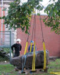 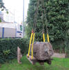 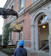 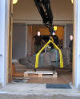 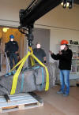 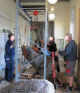 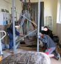 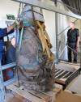
Listennummer : DR 213 / DK Syd 9
Translitteration: : ąstarþr : rasþi : stin : þasi : | : ąftiR : iuta : faþur : | : sin : harþa : | : kuþan : þi|akn :
Ole Worm (*13.05.1588 - 31.08.1654, Arzt, Universalgelehrter und der Begründer der Runologie)
 Bildquelle:
Digitale Sammlung der Königlichen Bibliothek Kopenhagen -
Lizenz:
Public Domain
Bildquelle:
Digitale Sammlung der Königlichen Bibliothek Kopenhagen -
Lizenz:
Public Domain
hatte den dänischen König Christian IV. (*12.04.1577 - 28.02.1648)
 Bildquelle:
Wikipedia - Lizenz:
Public Domain
Bildquelle:
Wikipedia - Lizenz:
Public Domain
dazu bewogen am 11. August 1622 einen Brief an die Bischöfe von Dänemark und Norwegen zu senden, um darüber die Pfarrer im Land auzufordern alle Informationen zu Denkmälern, Runensteinen, Grabhügel usw. an ihn zu melden, um die älteste Geschichte Dänemarks zu beleuchten. Unterstützer oder gar treibende Kraft war wohl Christian Friis (*4. November 1581 auf Gut Krastrup in Farstrup - 01. Oktober 1639, dänischer Adliger und königlicher Kanzler).
 Bildquelle:
Wikipedia - Lizenz:
Public Domain
Bildquelle:
Wikipedia - Lizenz:
Public Domain
Der Originaltext dieses Briefes - Quelle: Præsteindberetninger til Ole Worm - Band 1, S. XI - lautet auszugsweise: "Wor gunst tillforn. Wy bede Eder och wille, at I Eders mueligste flid ahnwender allewegne wdj Eders stigt att opsøge och antegne alle slags antiquiteter och documenter effter medfølgende fortegnelsis indhold, och att I saadanne med flid lader optegne och engang inden Paaske førstkommendis wdj wortt cantzelie lader indleffuere. Dermed skie wor willghe. Befalendis Eder Gud. Skreffuitt paa wortt [slott] Kiøbenhaffn, den 10. augusti anno 1622. Vnder vort signett. Christian."
Jon Skonvig war nach Eingang der Rückmeldungen im Auftrag von Ole Worm (*13.05.1588 - 31.08.1654, Arzt, Universalgelehrter und der Begründer der Runologie) in Dänemark unterwegs und suchte die betreffenden Örtlichkeiten auf, beschrieb und zeichnete die Runensteine erstmals. Er fand diesen Stein bei einer Steinbrücke (Jungfernbrücke), zwischen Skovlænge und Gurreby (ca. 20 km nordwestlich von Maribo), bei einem großen Grabhügel.
Dessen Zeichnung hat sich in der "Den Arnamagnæanske Samling" in der Handschrift A.M. 366 fol." (Zu deutsch: Arnamagnäanische Sammlung) erhalten. Am 28.07.2023 fiel mir zufällig auf, dass die Handschrift inzwischen digitalisiert wurde - welch Freude! Zuvor war dies aus Personalmangel nicht möglich gewesen, wie man mir noch bei meinem Besuch vor Ort am Mittwoch, 28.09.2022, in Kopenhagen in der Universität in der Arnamagnæanske Samling, wo ich das Original in Händen halten und eingehend fotografieren durfte, erklärte. Man bat mich aber von einer Veröffentlichung meiner Fotos abzusehen. Das ist ja jetzt auch nicht mehr nötig, denn deren Digitalisat liegt natürlich in bester Qualität vor.
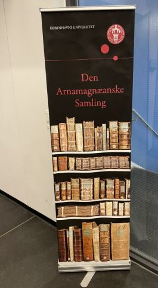
Über diesen Link des Instituts für Nordische Studien und Linguistik (NorS) in Kopenhagen kann man die entsprechende Handschrift A.M. 366 fol. im Internet als Abbild eines einfachen sw Microfilms abrufen - Seite 4r - der am 13.09.2004 angefertigt wurde, wie man mir von dort mitteilte. Das ist ja jetzt aber nach der Digitalisierung des Originals nur noch die 2. Wahl.
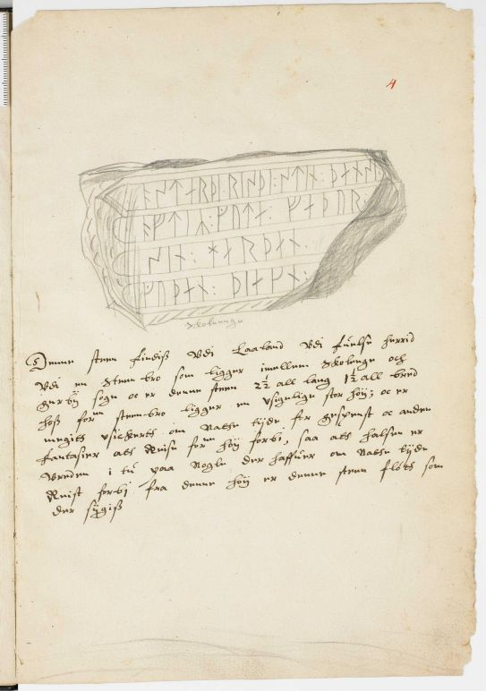
Skonvigs Text unter seiner Zeichnung: »Denne steen findiss Vdi Laaland Vdi Fuelse herrid Vdi en Steen bro som ligger imellem Skolenge och Gerbÿ sogn oc er denne steen 2 ½ all lang 1 ½ all bred hoss forne steenbro ligger en Vsigelige stor hoÿ; oc er megitt vsickertt om Natte tijde for Gespenst oc anden Fantasier att Reise forne hoÿ forbi, saa att halsen er Vreden i tu paa Nogle der haffuer om Natte tijde Reist forbi fra denne hoÿ er denne steen fløtt som der sijgiss.«
Übersetzung: "Dieser Stein wurde auf Lolland im Bezirk Fuglse bei einer Steinbrücke gefunden, die zwischen Skolenge und der Gemeinde Gerbÿ liegt und dieser Stein ist 2 ½ Ellen lang und 1 ½ Ellen breit, bei der Steinbrücke liegt ein bemerkenswert hoher Hügel; und es ist sicher, dass Gespenster und andere Fantasien nachts an dem Hügel vorbeireisen, so dass der Hals sich dreht nach denen die nachts Zeit haben hier vorbeizureisen es ist ein schöner Stein wie man sagt." Die Übersetzung ab "Gespenster" ist sehr schwierig für mich und vermutlich teilweise nicht unbedingt korrekt!
Den Runenstein behandelt Ole Worm in seinem im Jahr 1643 in Kopenhagen erschienen großen Werk "Danicorum monumentorum libri sex : e spissis antiquitatum tenebris et in Dania ac Norvegia extantibus ruderibus (Übersetzung: Sechs Bücher dänischer Denkmäler, aus der dichten Dunkelheit der Vorgeschichte von den Ruinen in Dänemark und Norwegen) auf den Seiten 263 bis 267 - dort als "SCOLENGENSE" betitelt - und zeigt dazu auf der S. 263 die u.a. Abbildung.
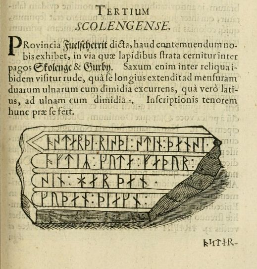
Bildquelle: Digitalisiat auf Archive.org - Lizenz: Public DomainOle Worm bittet in einem Brief vom 6.2.1636 seinen guten Freund, den Leibarzt des Kronprinzen Christian (* 10. April 1603; 2. Juni 1647),
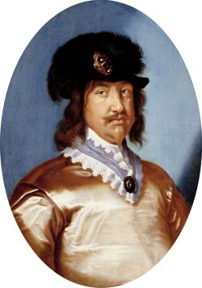
Bildquelle: Wikipedia - Lizenz: Public DomainHeinrich Köster, um Zeichnungen und Informationen zu den Runensteinen von Tillitse, Bregninge, Skovlænge und Tirsted. Es gibt jedoch nichts was darauf hindeutet, dass Köster Ole Worms Wunsch nachkam.
"...Der er hos Eder, paa Lolland og i Naboomraademe, Mindesmærker beskrevet med disse Tegn, og om nogle af dem er der givet mig Meddelelse, nemlig dem i Tillitze, Bregninge, Skovlænge og Tirsted. Hvis du skulde træffe at komme til disse Steder, beder jeg dig undersøge dem noget mere indgaaende og ikke undlade at sende mig Tegninger og Indbyggernes Beretninger om dem. Thi blandt de Oplysninger, der er meddelt mig om disse, savner jeg mangt og meget. Men at jeg er dig altfor besværlig, det skyldes den afbrudte Skrivepligt og Opsættelsen af din forventede Ankomst, som du havde stillet os i Udsigt..."
Übersetzung: "...Sie haben in Lolland und in den angrenzenden Gebieten Gedenkstätten mit diesen Zeichen beschrieben, und ich wurde über einige davon informiert, nämlich die in Tillitze, Bregninge, Skovlænge und Tirsted. Sollten Sie einmal an diese Orte kommen, bitte ich Sie, sie etwas gründlicher zu untersuchen und es nicht zu versäumen, mir Zeichnungen und Berichte der Bewohner über sie zu schicken. Denn unter den Informationen, die mir darüber mitgeteilt wurden, vermisse ich sehr, sehr viel. Dass ich Ihnen aber zu lästig bin, liegt an der unterbrochenen Schreibpflicht und der Verschiebung Ihrer voraussichtlichen Ankunft, die Sie uns in Aussicht gestellt hatten..."
Quelle: Breve fra og til Ole Worm I - 1607-1636 - 579. (Ep. 465) Til Henrik Køster i Nykøbing F - 6.2.1636 - S. 384 in der pdf-Datei.
Der Runenstein sollte dann aufgrund einer königlichen Verfügung vom Freitag 09.02.1652, erlassen durch König Frederik III. von Dänemark und Norwegen
 Bildquelle:
Königl. Sammlung - Schloss Rosenborg - Lizenz:
Public Domain
Bildquelle:
Königl. Sammlung - Schloss Rosenborg - Lizenz:
Public Domain
nach Kopenhagen versandt werden (siehe: Nordisk Tidsskrift for Oldkyndighed, Band 1, 1832, S. 325). Die Verfügung wurden den regionalen Lehensmännern zugestellt. Dort heißt es als entsprechende Aufforderung: "Laaland. Friderich Barnewitz til Aalholm Lehn; Tilletſe⸗/ Bregninge⸗, Skovlænge⸗ og Tirsted - Stenene". Dieser Anweisung kam man hier, wie andernorts auch, jedoch nicht nach. Seitens Kopenhagen wurde nicht nachgehakt, da dort 1654 die Pest ausbrach, was auch Ole Worm noch im gleichen Jahr den Tod brachte.
Es gibt auch aus dem Jahr 1687 Informationen aus einer "Præsteindberetninger". Mit Datum vom 02.02.1667 hatte nämlich Professor Peder Hansen Resen (*17.06.1625-01.06.1688, Historiker)
 Bildquelle:
Wikipedia - Lizenz:
Public Domain
Bildquelle:
Wikipedia - Lizenz:
Public Domain
über die Bischöfe um Rückmeldungen der örtlichen Pfarrer zu den Altertümern in deren Region gebeten.
Peder Hansen Resen hat daraus mit dem von ihm über 20 Jahre gesammelten Material das großartige Werk "Atlas Danicus", bestehend aus letztlich 39 Folianten, geschaffen. Nur geringe Teile wurden aber schon zu seiner Lebzeit gedruckt. Die Folianten wurden wenige Jahre nach seinem Tod 1692 an die Königliche Bibliothek Kopenhagen übergeben. Aufbewahrt wurden sie auf dem Dachboden der Trinitatis Kirche. Dort wurden sie fleißig studiert, abgeschrieben und zeitweise ausgeliehen. Leider wurde dann ein Großteil davon beim Kopenhagener Großbrand 1728 zerstört. Es hat sich neben einigen Originalseiten - siehe Arnamagnäanische Sammlung - AM 359 fol. / AM 360 fol. / AM 361 fol. und AM 362 fol. (digitalisiert) - nur eine (verkürzte) Abschrift und außerdem Kupferstiche von etwa 200 Städteansichten aus der Vogelperspektive erhalten. Originale dieser AM 359/360/361 fol sind über die Universität Kopenhagen - Institut for Nordiske Studier og Sprogvidenskab (NorS) - AM 359 fol / AM 360 fol / AM 360 fol (Karten) / AM 361 fol - in sw abrufbar. Eine zweite (verkürzte) Ausgabe war von Vincent Lerche (*04.04.1666 - 28.07.1742, Jurist, Architekt) beauftragt worden, diese wurde aber beim Brand von Schloss Christiansborg im Jahr 1794 vernichtet.
In der Königlichen Bibliothek Kopenhagen wird seit 1803 in der Sammlung Uldall (186 folio) diese einzige verbliebene Ausgabe, die in den 1750er Jahren durch den Hofbaumeister Laurids de Thurah (*04.03.1706 - 06.09.1759) aus verstreuten Resten des Atlas Danicus in 7 Bänden rekonstruiert worden war, aufbewahrt:
Wie diesem Titel zu entnehmen ist, gehörte dieses Exemplar vormals Adam Gottlob Graf von Moltke (*10.11.1710 - 25.09.1792, Staatsmann, Diplomat). Nach dessen Tod erwarb Herman Treschow (*11.12.1739 - 02.05.1797, Professor für Theologie, Pfarrer) diese Ausgabe. Peter Uldall (*29.06.1743 - 11.11.1798, Jurist, Theologe) wiederum kaufte sie für 170 Rigsdaler (Rigsdaler zu 24 Skilling - damals 1 ½ Mark) nach dessen Ableben. Er hatte aber nicht lange Freude daran, denn er starb ein Jahr später an einem Schlaganfall. Sein Sohn, Justizrat W. A. Uldall, schenkte diese Ausgabe der Kgl. Bibliothek im Jahr 1803, wo dieses großartige Werk noch heute verwahrt wird (Ein Band hat übrigens die Größe H/B/D von 40 cm x 29,5 cm x 9,5 cm).
Im Band V finden sich ab der Seite 364 ff. Informationen - nach Ole Worm - zu diesem Runenstein.
Søren Abildgaard (*18.02.1718 - 02.07.1791, Zeichner, Kupferstecher und Geologe)
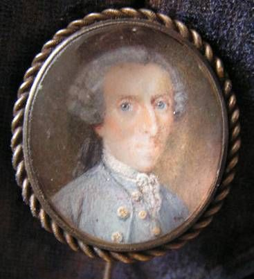
Bildquelle: Jellingprojektet - Lizenz: Public Domainfand ihn 1765 bei seiner antiquarischen Reise durch Dänemark noch bei der bereits erwähnten Steinbrücke, in einer Reihe mit anderen Steinen. Von ihm stammt diese Zeichnung.
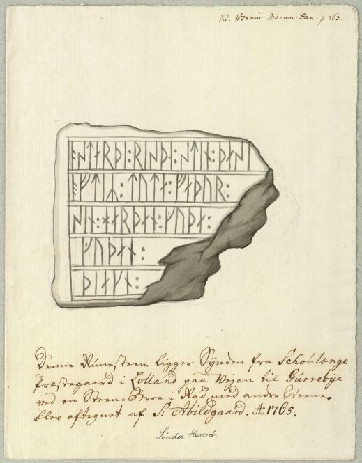
Lizenz: CC-BY-SA - Der digitalen Sammlung des Nationalmuseums Kopenhagen entnommen.
Handschriftlicher Text unter der Zeichnung:
"Denne Runesteen ligger Synden for Schoulænge Præstegaard i Lolland paa Vejen til Gurrebye ved en Steen-Broe i Rad med andre Stene. Blev aftegnet af S: Abildgaard. A(nn)o 1765."
Übersetzung: "Dieser Runenstein liegt südlich von Skovlænge Pfarrhof auf Lolland an der Straße nach Gurrebye bei einer Steinbrücke in einer Reihe mit anderen Steinen. Gezeichnet von S: Abildgaard. A(nn)o 1765.
Originalgröße der Skizze: 16,5 x 22 cm
Ergänzend hat sich von Søren Abildgaard ein Tagebucheintrag - Dagbog I - 1765 - S. 49 - erhalten. Seine Tagebücher befinden sich heute im Antiqvarisk-Topografisk Arkiv in Kopenhagen. Außerdem wird dort eine Kopie für Besucher vorgehalten, die ich im Archiv am 28.09.2022 sichten und fotografieren durfte.
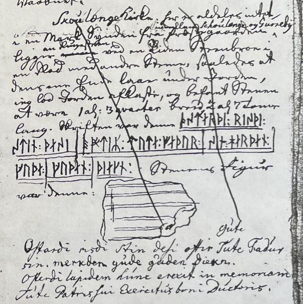
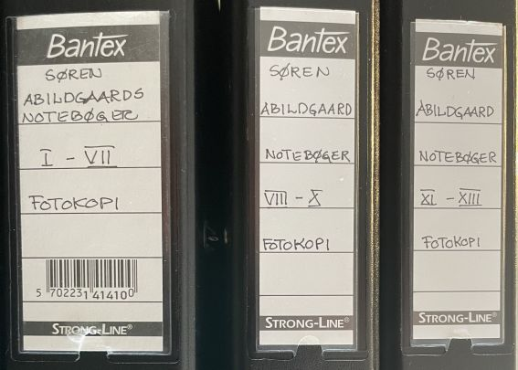
Auch Erik Pontoppidan (der Jüngere, *03.09.1698 - 20.12.1764)
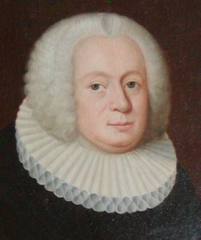
Bildquelle: Wikipedia - Lizenz: Public Domainmacht in seinem Werk von 1767 "Den Danske Atlas" - Band III - Cap. XI und XII - (= S. 22 in der pdf-Datei) Ausführungen zu der Existenz des Runensteins:
"...Paa Skovlænge, Mark i Fugle Herret, ligge ved Veyen en Rune-Steen halvtredie Alen lang, og halvanden bred, derpaa staaer: Osterdi risdi stin denfi oftir guta fadur sin herned guden diagn = Osterd reiste denne Steen efter Gute sin Fader, den gode Krigshærs Anfører."
Übersetzung: "Bei Skovlænge, auf einem Acker im Bezirk Fugle, liegt an der Straße ein 2 ½ Ellen langer und 1 ½ Ellen breiter Runenstein, auf dem geschrieben steht: Osterdi risdi stin denfi oftir guta fadur sin herned guden diagn = Osterd errichtete diesen Stein zu Ehren seines Vaters Gute, dem Anführer des Kriegsheers."
In seinem Band VI, Teil VII von 1774 kommt er auf der Seite 462 (e) - Seite 8 in der pdf-Datei - nochmals auf den Runenstein zu sprechen:
"...Siden kom de to gange om Aaret sammen i en Eng, som ligger til begge Byer; igiennem samme løber et lidet Vand, hvorover er lagt en stor Steen til Broe, som endnu kaldes Jomfrue-Broen; paa Stenen staaer med Rune-Bogstaver, som nu nesten ere ulæselige: Osterdi Risti Stini Densi, Offtier Guda Fadur Siin, Hëerden Gutten Diagn. D. e. Osterdi reiste denne Steen til Erindring af sin Fader Guda, som var en god Anfører for Folket. Samme Steen meenes at være fløttet fra en Høy kaldet Sandhøy, hvor bemeldte Kiæmpe Guda af sin Søn Osterdi skal være begravet..."
Übersetzung: "...Durch denselben fließt ein wenig Wasser, über das ein großer Stein für eine Brücke gelegt wurde, die noch immer Jungfrauenbrücke genannt wird; Auf dem Stein sind Runenbuchstaben geschrieben, die jetzt fast unleserlich sind: Osterdi Risti Stini Densi, Offtier Guda Fadur Siin, Hëerden Gutten Diagn. D.h. Osterdi errichtete diesen Stein zum Gedenken an seinen Vater Guda, der ein guter Anführer des Volkes war. Es wird angenommen, dass derselbe Stein von einem Hügel namens Sandhügel geschwemmt wurde, wo Berichten zufolge der Kämpfer Guda von seinem Sohn Osterdi begraben sein soll...."
Dann dauert es bis zum Jahr 1833, bis durch Johan Gustav Liljegren (*27.02.1791 -02.06.1837, schwedischer Nationalarchivar und Archäologe)
 Bildquelle:
Schwedisches Reichsarchiv - Lizenz:
Public Domain
Bildquelle:
Schwedisches Reichsarchiv - Lizenz:
Public Domain
in seinem Buch "Run - Urkunder" ein kurzer Eintrag zu diesem Runenstein auf der S. 170 unter der Nr. 1491 vorgenommen wird.
Jens Jacob Asmussen Worsaae (*14.03.1821 - 15.08.1885, dänischer Archäologe und Vorgeschichtler)
 Bildquelle: Fotografie
zw. 1863-1900 von Fotograf Budtz Müller
(*26.12.1837 -
30.12.1884) -
Det Kgl. Biblioteks billedsamling - Lizenz:
Public Domain
Bildquelle: Fotografie
zw. 1863-1900 von Fotograf Budtz Müller
(*26.12.1837 -
30.12.1884) -
Det Kgl. Biblioteks billedsamling - Lizenz:
Public Domain
hat zu diesem Runenstein in seinem Notesbog I aus dem Jahr 1848 einen Eintrag auf den S. 56ff. vorgenommen.


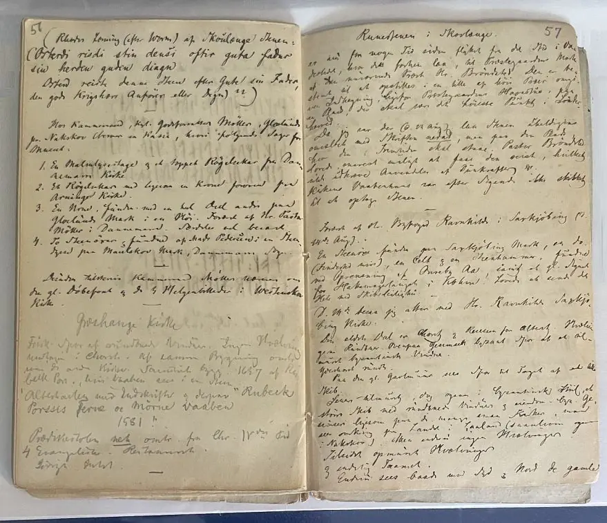
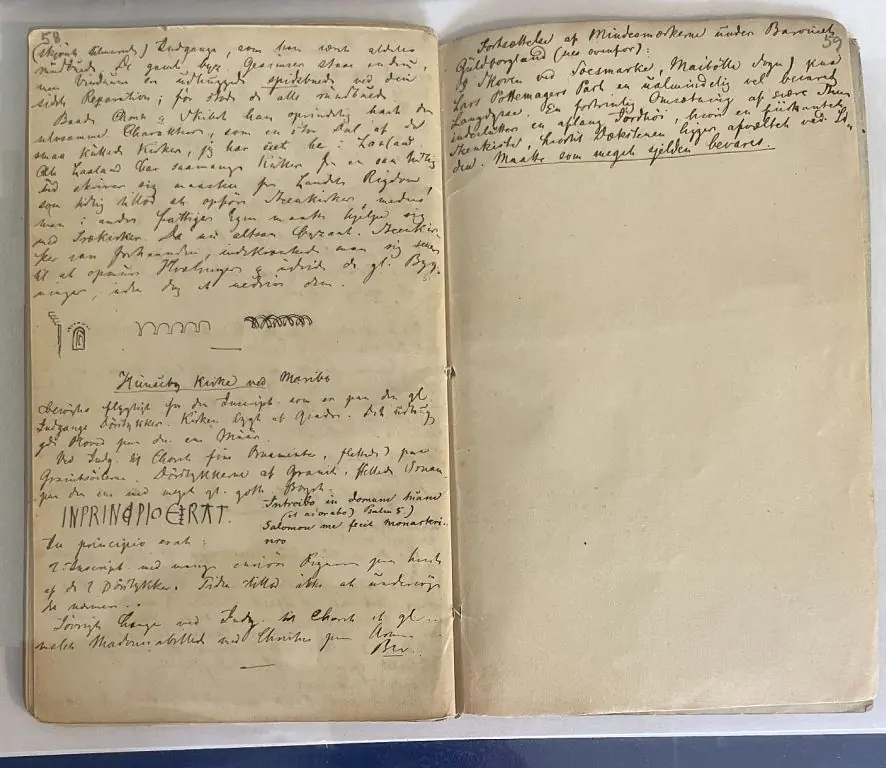
Dessen Tagebücher werden in Kopenhagen in dem "Antikvarisk-Topografisk Arkiv" aufbewahrt, worüber ich bei meinem Besuch am 27.09.2022 die o.a. Fotos anfertigen konnte.
Durch Jacob Kornerup (*19.11.1825 - 09.03.1913, dänischer Archäologe und Zeichner aus Roskilde)
 Bildquelle:
Wikipedia - Lizenz:
Public Domain
Bildquelle:
Wikipedia - Lizenz:
Public Domain
wurde der Runenstein im Jahr 1864 gezeichnet. Diese Zeichnung hat sich im "Antikvarisk-Topografisk Arkiv" in Kopenhagen bewahrt. In der Dissertation von Erik Moltke (*04.04.1901 - 19.10.1984, Runologe, Historiker) mit dem Titel "Jon Skonvig og de andre runetegnere. Et bidrag til runologiens historie i Danmark og Norge, Band I, 1956" findet sie sich im Band 1, S. 11, worüber ich sie hier einbinden kann - Lizenz: CC-BY-SA
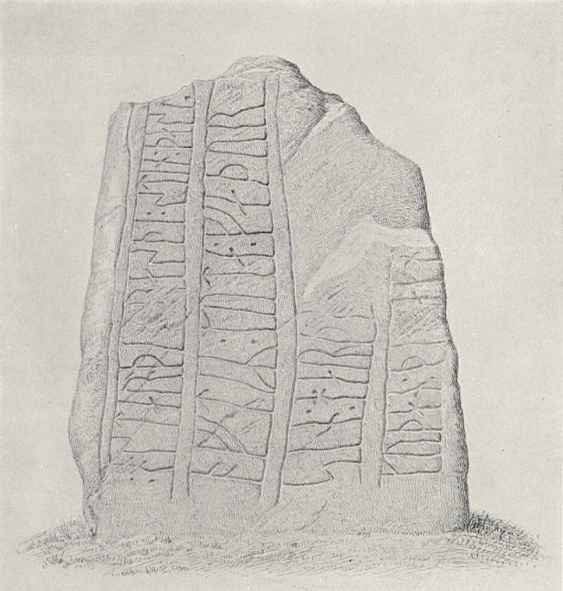
P. G. Thorsen (*07.08.1811 - 06.05.1883, Bibliothekar, Runenforscher und Historiker)
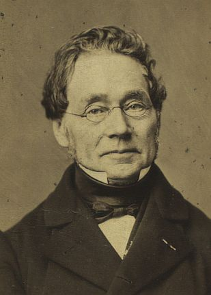
Bildquelle: Fotografie zw. 1863-1900 von Fotograf Budtz Müller (*26.12.1837 - 30.12.1884) - Det Kgl. Biblioteks billedsamling - Lizenz: Public Domainhat in seinem Runenwerk "De danske runemindesmærker beskrevne og forklarede, anden Afdeling, Jyllands Runemindesmærker, Afbildninger og Text, Bind II. Text, 1880" auf der S. 270 einen einseitigen Textbeitrag zu diesem Runenstein. In seinem Band I mit den Zeichnungen der Runensteine von Magnus Petersen (*04.09.1827 - 01.02.1917, Archäologischer Zeichner und Restaurator)
 Bildquelle: Fotografie
von 1903 von Fotograf Marius Christensen
(*24.6.1874 -
25.6.1907) -
Det Kgl. Biblioteks billedsamling - Lizenz:
Public Domain
Bildquelle: Fotografie
von 1903 von Fotograf Marius Christensen
(*24.6.1874 -
25.6.1907) -
Det Kgl. Biblioteks billedsamling - Lizenz:
Public Domain
findet sich der Runenstein nicht. Dafür findet sich eine Zeichnung von ihm in der Hinterlassenschaft von P. G. Thorsen.
P. G. Thorsens Nachlass (Bezeichnet als: P. G. Thorsens optegnelser, tegninger m.m. vedrørende runer og runemindesmærker - überführt aus der Kopenhagener Universitätsbibliothek 1929 - Gemäß Ministerialschreiben vom 04.03.1929; früher benannt als Additamenta 612 kvart) - findet sich heutzutage in der Königlichen Bibliothek in Kopenhagen unter NKS 3296 kvart (in mehreren einzelnen Pappschachteln). In der Pappschachtel Nr. 18 fand ich dort bei meinen Studien am 27.09.2022 zu diesem Runenstein diese Zeichnung von Magnus Petersen vom 17. September 1871.
Zusätzlich fand ich in dieser Schachtel 18 zu meiner Überraschung auch eine Kopie der Zeichnung von Jacob Kornerup, die im Standardwerk bei Jacobsen/Moltke - Danmarks Runeindskrifter, 1942, Textband, Spalte 258, nicht erwähnt wird.
Durch Ludv. F. A. Wimmer (*07.02.1839 - 29.04.1920, Philologe und Runenforscher)
 Bildquelle:
Fotografie zw. 1877-1900 von Fotograf Hansen & Weller
-
Det Kgl. Biblioteks billedsamling - Lizenz:
Public Domain
Bildquelle:
Fotografie zw. 1877-1900 von Fotograf Hansen & Weller
-
Det Kgl. Biblioteks billedsamling - Lizenz:
Public Domain
wurde der Runenstein in seinem großen Runenwerk mit dem Titel ""De danske runemindesmærker undersøgte og tolkede af Ludv. F. A. Wimmer:, Andet bind, Runestenene i Jylland og på øerne. 1899-1901" auf den Seiten 434-37 abgehandelt. Er hat ihn am 27. Juli 1879 und nochmals vom 12./13. Juli 1900 vor Ort studiert. Er führt neben seinen Überlegungen diese Zeichnung von Magnus Petersen, die er noch leicht überarbeitet hat, an.
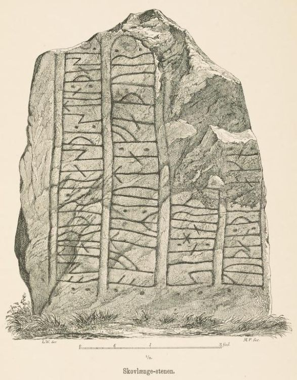
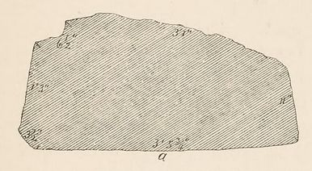
Lizenz: Public DomainLudv. F. A. Wimmer hat seine jahrelangen Aufzeichnungen der "Kgl. Bibliotek" in Kopenhagen überlassen. Ein Verzeichnis darüber wurde 1915 in Buchform herausgegeben - "Collectio runologica Wimmeriana: Fortegnelse over Ludv. F. A. Wimmers runologiske o.a. Samlinger i Det kgl. Bibliotek".
In seinen Unterlagen in der Königlichen Bibliothek in Kopenhagen befinden sich unter "III - Originaltegninger af de danske Runemindesmærker, udførte paa Undersøgelsesrejserne af Magn. Petersen og kontrollerede paa Stedet af Ludv. Wimmer, samt Prøvetryk af de paa Grundlag af de nævnte Tegninger, Aftryk o. s. v. til De danske Runemindesmærker" udførte Afbildninger med Wimmers Rettelser" zu dem Runenstein von Skovlænge unter der Nr. 94 insgesamt 6 Blätter, darunter diese Zeichnung, die ich am 27.09.2022 fotografieren durfte.


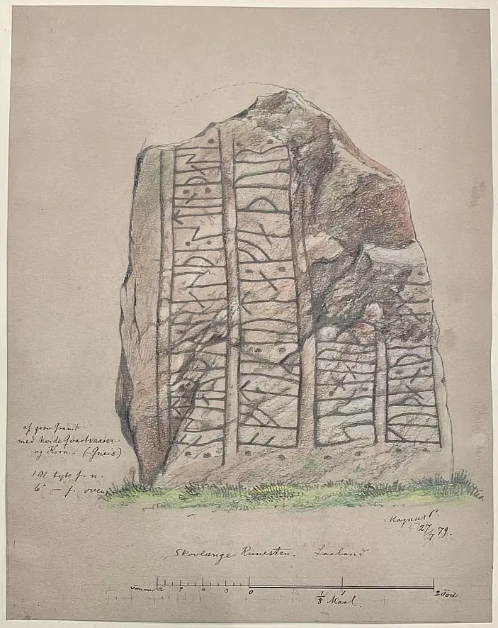
Magnus Petersen hat diese tolle Zeichnung auf den 27. 7. 1879 datiert und handsigniert.
Erik Moltke (*04.04.1901 - 19.10.1984, Runologe, Historiker) hat den Runenstein am 10.04.1931 fotografiert und die Runenzeichen nachträglich nachgezeichnet.
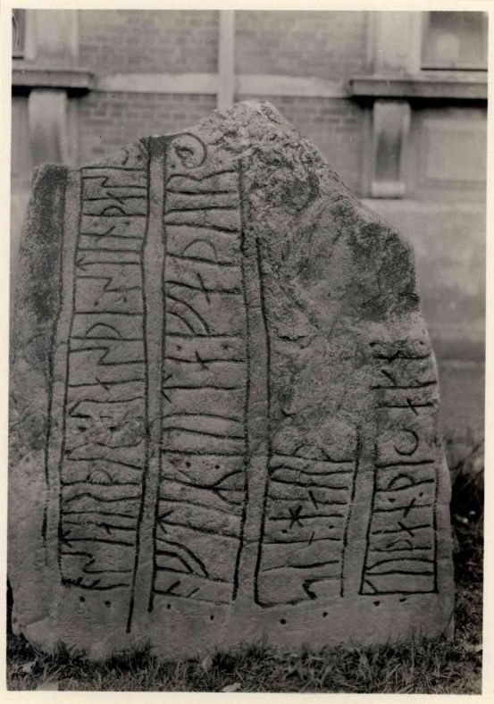
Lizenz: CC-BY-SA - Das Foto ist der digitalen Sammlung des Nationalmuseums in Kopenhagen entnommen.
Im Vorfeld zu dem 2016 erschienenen Buch von Lisbeth M. Imer (*1973, Runologin am Nationalmuseum Kopenhagen) "Danmarks Runesten - en fortælling" reiste sie mit dem Fotografen Roberto Fortuna zur Bestandsaufnahme durch die Lande. Dieser hat die Runensteine mit Schräglicht aufgenommen und darüber wirklich herausragende Fotos erzielt. Diese Fotografie stammt vom 14.01.2015.
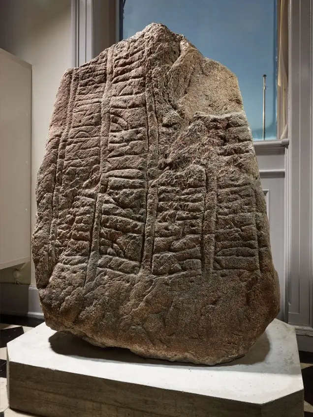
Zuvor hatte dieser Fotograf den Runenstein bereits am 05.03.2014 fotografiert, als er noch im Freien neben dem Museum aufgestellt war - siehe auch unten.
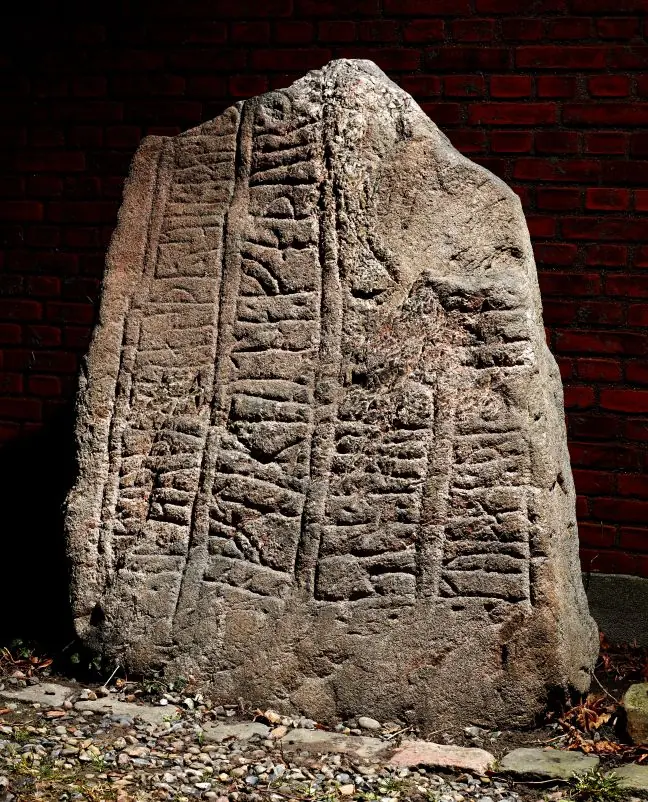
Die beiden Fotos sind der digitalen Sammlung des Nationalmuseums in Kopenhagen entlehnt - jeweils Lizenz: CC-BY-SA
Diese Aufnahme des Fotografen Roberto Fortuna zeigt Lisbeth M. Imer am 05.03.2014 bei den nächtlichen Aufnahmen - Internetfund im Zusammenhang mit dem damaligen Blog - leider nicht mehr abrufbar - https://natmus.dk/presse-og-nyheder/nyhedsarkiv/2012/runesten-skal-fotograferes/.
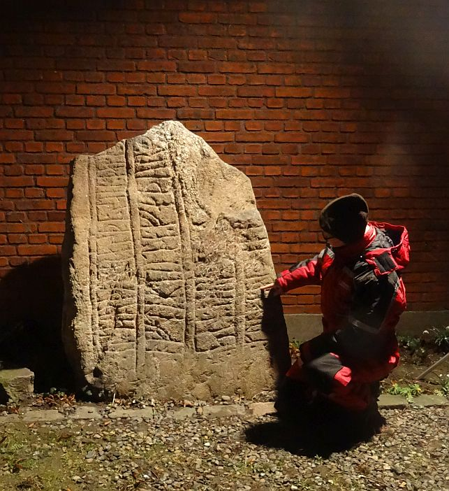
Lizenz: CC-BY-SAErst Ende des Jahres 1848 wurde er zum Skovlænge Pfarrhofacker und 1879 in den Skovlænge Pfarrhofgarten versetzt. Im Jahre 1894 wurde er in Maribo zum damaligen Lolland-Falster Museum umgesetzt und am 2014 in das Siftsmuseet überführt, wo er nun sicherlich seinen endgültigen Standort erhalten hat.
Der Stein hat teilweise eine extrem unebene Oberfläche. Zwei der vier senkrechten Runenreihen weisen eine Verzierung mittels einer einfachen Spirale auf (aus Moltke - Runerne i Danmark og deres Oprindelse - S. 220 - Nr. 3) - die Leserichtung der Inschrift habe ich hier - anhand der Zeichnung von Jacob Kornerup - visualisiert.
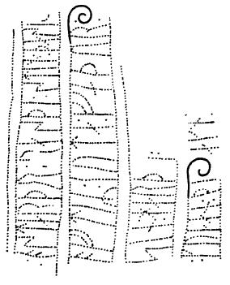
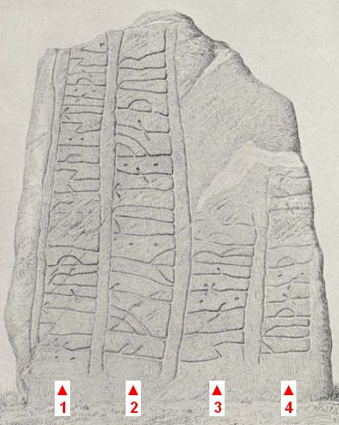
Bei meiner Rückfahrt von meiner Wikinger-Tour 2016 am Mittwoch, 31.08.2016, war das Museum leider geschlossen (siehe Foto Maribo_Info unten), so dass ich die beiden nach innen versetzten Runensteine nicht sehen konnte.


#/media/Datei:Fotoreproductie_van_een_schilderij,_voorstellende_een_portret_van_Christian_Friis_til_Kragerup_Christian_Friis_(til_Kragerup)_(titel_op_object),_RP-F-2001-7-742-16.jpg){kind=link}


Am 02.09.2017 war es mir kurzfristig möglich dem Museum in Maribo einen erneuten Besuch abzustatten. Endlich hat es mal geklappt! Die beiden Runensteine sind im Foyer aufgestellt und konnten von mir fotografiert werden, ohne dass ich Eintrittsgeld für das Museum - mir fehlte schlicht die Zeit - hätte zahlen müssen - Dankeschön - Tusind tak!
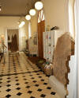 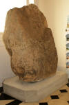 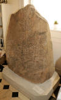 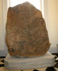


Die Infos zu diesem Runenstein von der Homepage der dänischen Runendatenbank findet man hier.
Der entsprechende Eintrag zu dem Runenstein in "Fund og Fortidsminder" ist hier zu finden (Dort aber nicht unter Skovlænge registriert, sondern mit Nonnehøj).
Über diesen Link finden sich zu dem Runenstein Informationen des Forschungsprojektes "Runes" der Akademie der Wissenschaften zu Göttingen.
Über diese Webseite kann man eine hochauflösende 3D Ansicht des Runensteins aufrufen. Bei jeder 3D Ansicht hat man Einstellmöglichkeiten um Änderungen vorzunehmen: Neigung / Beleuchtung / Hintergrund. Der Autor - hat leider keinerlei Infos zu seiner Person hinterlegt - gibt auch Anleitungen zur Maus- / Fingersteuerung - Alle Achtung - tolle Arbeit! Vielen Dank!
Literaturhinweise siehe unten.
Listennummer : DR 217 / DK Syd 3
Transliteration:
Seite A þurui : kat : kauruan (:) | stain : þansi : --(-) | (k)(r)(u)(k) :
Seite B uiar (:) sin : ian : han (:) uas | -- alra : triu--...
Seite C sutrsuia (:) au(k) (:) suþr[tana :] | kuaul : at : ha- af nur|minum sąm
Seite D baistr : han uas | ... sutrsuia : (-)uk :
Dieser Runenstein wurde 1854 auf einem Acker in der Nähe einer alten Furt, die angeblich zu einer Thingstätte führte, zwischen Sædinge und Holeby (ca. 8 km südwestlich von Maribo) gefunden. Dies war aller Wahrscheinlichkeit nach auch sein ursprünglicher Standort. Da der große, in die Erde eingesunkene Stein beim Pflügen gehindert hatte, wurde er in den 1830er Jahren zunächst in die Erde eingegraben. Da er aber nicht tief genug lag und deshalb immer noch beim Pflügen störte, wurde er ausgegraben und in 9 Stücke gespalten, ohne dass die Runen wahrgenommen wurden, da er mit schwerer lehmiger Erde bedeckt gewesen sein soll. Ein auf den 03.10.1854 datierter Brief von Pastor Rasmus Carl Julius Schade (*07.07.1807 - 01.12.1870, Pfarrer in Nebbelunde-Sædinge seit 1843)
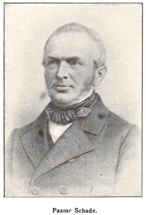
Bildquelle: Lolland Falsters Historiske Samfunds Aarbøg XIX - 1931 - Seite 96 - Aufsatz "Pastor Schade" von Frederik Grejsenan die Altertümerkommission in Kopenhagen, der sich im Antikvarisk -Topografisk Arkiv in Kopenhagen bewahrt hat, war die erste Anmeldung zum Fund dieses Runensteins. Darin heißt es: "...Paa det Sted, hvor Stenen laae, skal der i ældre Tider være afholdt Thing...". Übersetzung: "...An der Stelle, wo der Stein lag, wurde in der Vorzeit das Thing abgehalten...". Er sorgte auch dafür, dass die Bruchstücke zum Pfarrhaus in Nebbelunde gebracht und auf der dortigen Wiese abgelegt wurden. Hier entdeckte Jens Jacob Asmussen Worsaae (*14.03.1821 - 15.08.1885, dänischer Archäologe und Vorgeschichtler)
Bildquelle: Fotografie
zw. 1863-1900 von Fotograf Budtz Müller
(*26.12.1837 -
30.12.1884) -
Det Kgl. Biblioteks billedsamling - Lizenz:
Public Domain
glücklicherweise die Inschrift, die 1859 von Jacob Kornerup (*19.11.1825 - 09.03.1913, dänischer Archäologe und Zeichner aus Roskilde)
Bildquelle:
Wikipedia - Lizenz:
Public Domain
auf sein Geheiß und unter seiner Aufsicht gezeichnet wurde. Die vierte Seite (D) sah man damals nicht, weil er darauf lag.
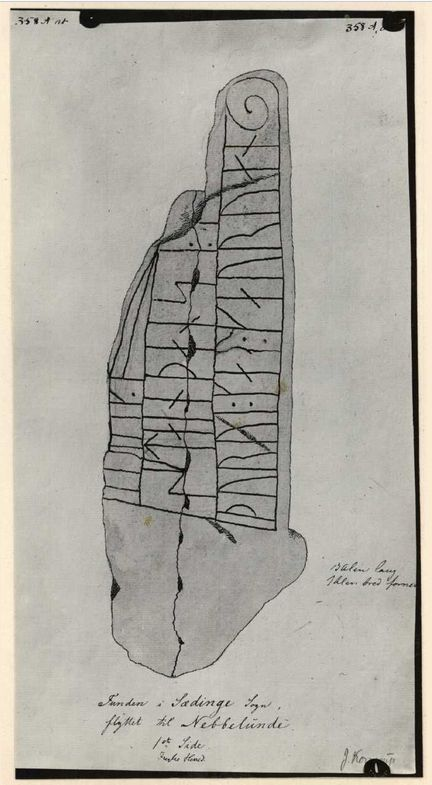
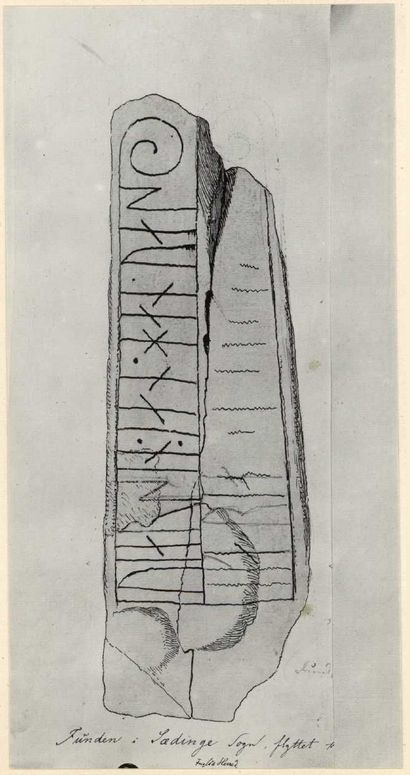
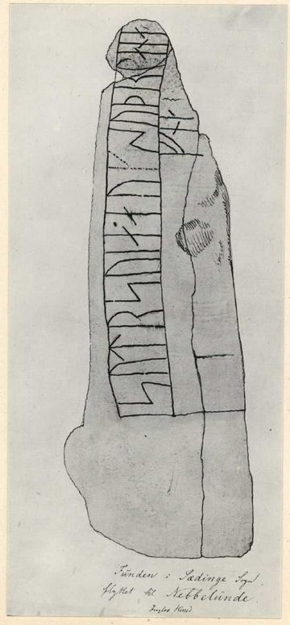
Die originalen Zeichnungen von 1859 von Jacob Kornerup sind seit 2022 in der Digitalen Sammlung Nationalmuseum Kopenhagen als Digitalisat abrufbar - Zeichnung 1 - 2 - 3 - Lizenz: jeweils Public Domain
Magnus Petersen (*04.09.1827 - 01.02.1917, Archäologischer Zeichner und Restaurator)
Bildquelle:
Fotografie von 1903 von Fotograf Marius Christensen
(*24.6.1874 -
25.6.1907) -
Det Kgl. Biblioteks billedsamling - Lizenz:
Public Domain
zeichnete die Runensteinfragmente am 15. September 1871 (Seite A-C) vor Ort. Die nachfolgenden Originalzeichnungen fand ich bei meinem Studienbesuch im September 2022 in der Königlichen Bibliothek in Kopenhagen im Nachlass von P. G. Thorsen - näheres weiter unten.
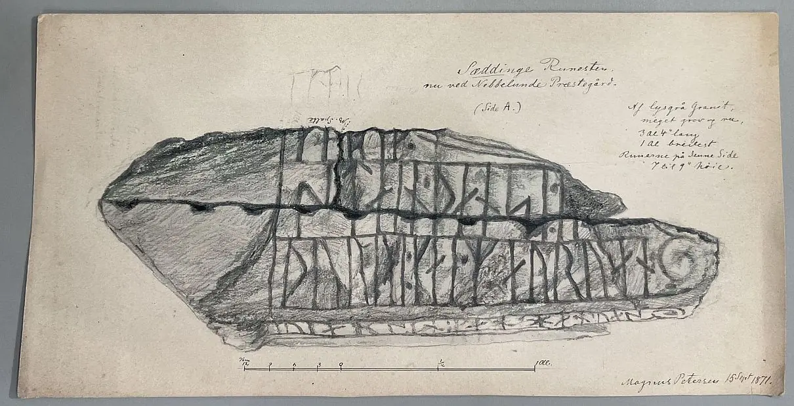
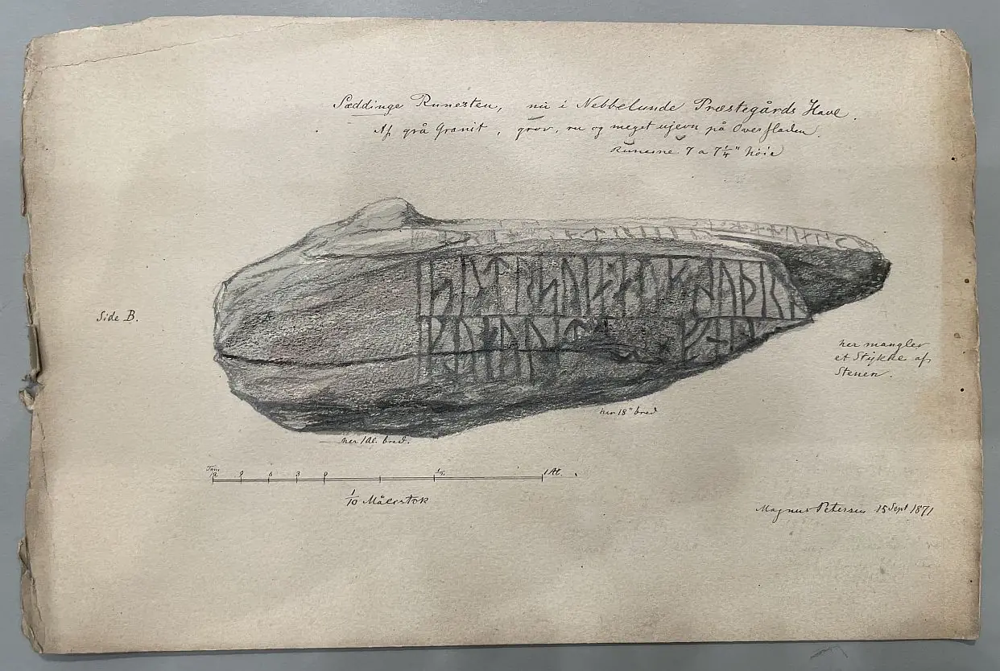
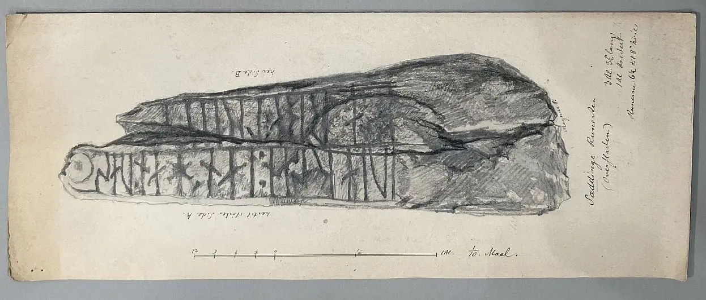
George Stephens (*13.12.1813 - 09.08.1895, englischer Archäologe und Philologe)
 Bildquelle:
Minder fra min Virksomhed paa Arkæologiens
Omraade fra 1845 til 1908 von
Magnus Petersen (*04.09.1827 - 01.02.1917) auf der
Seite 265 - Lizenz:
Public Domain
Bildquelle:
Minder fra min Virksomhed paa Arkæologiens
Omraade fra 1845 til 1908 von
Magnus Petersen (*04.09.1827 - 01.02.1917) auf der
Seite 265 - Lizenz:
Public Domain
setzt sich in The old-northern runic Monuments of Scandinavia and England, Vol. II - 1867-68 - ab der S. 780 mit der Inschrift dieses Runensteins auseinander. Nachdem er die o.a. Zeichnungen von Jacob Kornerup in verkleinertem Maßstab bringt,
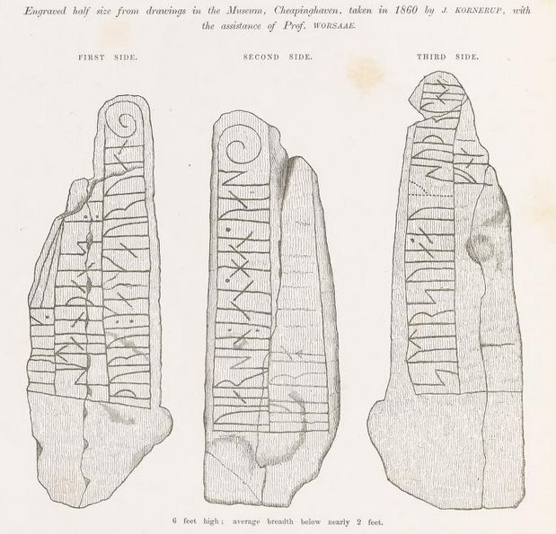
Bildquelle: George Stephens - The old-northern runic Monuments of Scandinavia and England, Vol. II - 1867-68 - S. 780 - Lizenz: Public Domain.
berichtet er zur Historie (übersetzt): "... Der große Stein der beim Pflügen lange Zeit störte, sei erst vergraben worden und da er dann immer noch dem Pflug im Weg war, wurde er herausgenommen und in Stücke gebrochen, um daraus Torpfosten zu machen. Da er mit lehmiger Erde bedeckt war, wurden die Runen lange Zeit nicht bemerkt. Professor Worsaae fand ihn auf einem Abfallhaufen! Er reinigte und entfernte ihn, und nachdem er ihn zusammengesetzt hatte, beaufsichtigte er seinen Künstler bei der sorgfältigen Kopie, die dann angefertigt wurde, da Licht und Wetter sehr günstig waren. Herr Schade, der Pfarrer von Nebbelunde hat ihm über den Zustand der Inschrift berichtet und dass, wie wir sehen, ein großes Stück der Spitze fehlt..." Danach setzt er sich mit der Inschrift und ihren Besonderheiten auseinander.
In seinem 1884 erschienenen Band "The old-northern runic monuments of Scandinavia and England, Vol. III" bringt er dann noch auf der S. 333 Korrekturen zu der Inschrift an. Zu denen fühlte er sich veranlasst, nachdem er die neuerliche Zeichnungen von 1878 durch Magnus Petersen gesichtet hatte.
Er schreibt, dass er den Stein bislang nicht persönlich in Augenschein nehmen konnte, da er nicht überall sein könne. Von daher habe er sich bei seinen Ausführungen in seinem Band II blind auf die Zeichnung / Infos von Jens Jacob Asmussen Worsaae und Jacob Kornerup verlassen. Er schlägt eine neue Interpretation der Inschrift vor, merkt aber auch an: "...Der Stein hat so sehr gelitten, dass wir uns über bestimmte Details nie sicher sein werden..."
P. G. Thorsen (*07.08.1811 - 06.05.1883, Bibliothekar, Runenforscher und Historiker)
Bildquelle: Fotografie zw. 1863-1883 von Fotograf Budtz Müller (*26.12.1837 - 30.12.1884) - Det Kgl. Biblioteks billedsamling - Lizenz: Public Domain
hat seine Beschreibung zu dem Runenstein in seinem Werk "De danske runemindesmærker beskrevne og forklarede, anden Afdeling, Jyllands Runemindesmærker, II. Text, 1880" auf der S. 271 wiedergegeben.
P. G. Thorsens Nachlass (Bezeichnet als: P. G. Thorsens optegnelser, tegninger m.m. vedrørende runer og runemindesmærker - überführt aus der Kopenhagener Universitätsbibliothek 1929 - Gemäß Ministerialschreiben vom 04.03.1929; früher benannt als Additamenta 612 kvart) - findet sich heutzutage in der Königlichen Bibliothek in Kopenhagen unter NKS 3296 kvart (in mehreren einzelnen Pappschachteln). In der Pappschachtel Nr. 18 fand ich dort bei meinen Studien am 27.09.2022 zu diesem Runenstein die bereits oben gezeigten drei Zeichnungen von Magnus Petersen vom 15. September 1871.
Ludv. F. A. Wimmer (*07.02.1839 - 29.04.1920, Philologe und Runenforscher)
Bildquelle: Fotografie
zw. 1877-1900 von Fotograf Hansen & Weller -
Det Kgl. Biblioteks billedsamling - Lizenz:
Public Domain
hat den Runenstein mehrfach studiert. Zuerst am 30./31. Juli 1879, dann zwischen dem 27. und 29. August 1894 und nochmals am 12./13. Juli 1900. Seine Forschungsergebnisse bringt er in seinem großen Runenwerk mit dem Titel "De danske runemindesmærker undersøgte og tolkede af Ludv. F. A. Wimmer, Andet Bind, Runestenene i Jylland og på øerne. 1899-1901" auf den S. 415-429. Auf den S. 416-417 bringt er diese vier Seitenansichten und den Steinquerschnitt, die er sich von Magnus Petersen zeichnen ließ. Er setzt sich ausführlich mit dem Runenstein und seiner Inschrift auseinander. Er konstantiert am Ende, dass ein schwedischer Mann (Viking), der sich auf der dänischen Insel Lolland niederließ eine dänische Frau (Thyre) geheiratet hatte. Der Runenstein zeigt ihm zufolge sehr große Übereinstimmungen mit den Runensteinen von Tågerup, Bregninge og Skovlænge. Man könne darüber annehmen, dass die Inschrift auch von einem Schweden ausgeführt wurde. Eine Stütze für eine solche Annahme lässt sich jedoch weder aus der Sprache noch aus den Runenformen ableiten, führt er weiter aus.
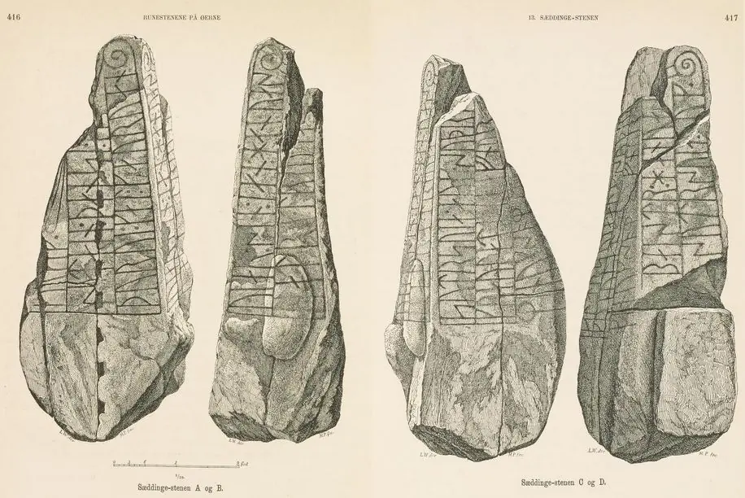
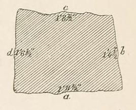
Ludv. F. A. Wimmer hat seine jahrelangen Aufzeichnungen der "Kgl. Bibliotek" in Kopenhagen überlassen. Ein Verzeichnis darüber wurde 1915 in Buchform herausgegeben - "Collectio runologica Wimmeriana: Fortegnelse over Ludv. F. A. Wimmers runologiske o.a. Samlinger i Det kgl. Bibliotek".
In seinen Unterlagen in der Königlichen Bibliothek in Kopenhagen befinden sich unter "III - Originaltegninger af de danske Runemindesmærker, udførte paa Undersøgelsesrejserne af Magn. Petersen og kontrollerede paa Stedet af Ludv. Wimmer, samt Prøvetryk af de paa Grundlag af de nævnte Tegninger, Aftryk o. s. v. til De danske Runemindesmærker" udførte Afbildninger med Wimmers Rettelser" zu dem Runenstein von Sædinge unter der Nr. 92 drei verschiedene Zeichnungen, die ich am 27.09.2022 fotografieren durfte (iPhone 12 Pro).
Diese Zeichnungen sind handsigniert von Magnus Petersen (*04.09.1827 - 01.02.1917, Archäologischer Zeichner und Restaurator) und mit dem Datum vom 30.07., bzw. 31.07.1879 versehen.
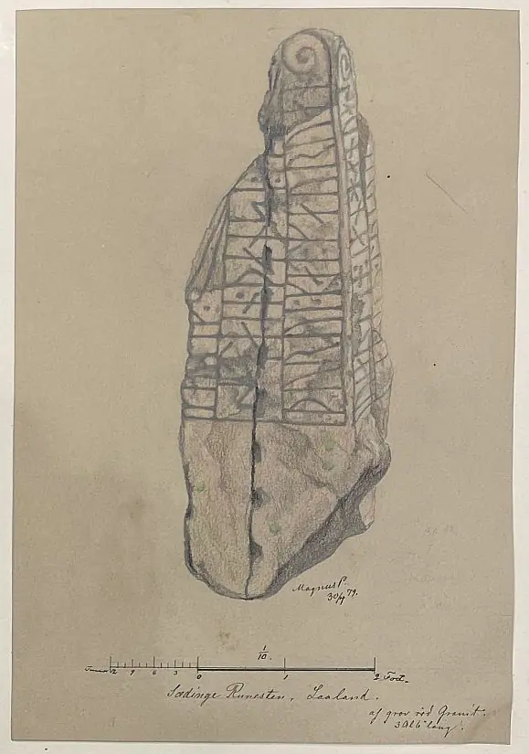
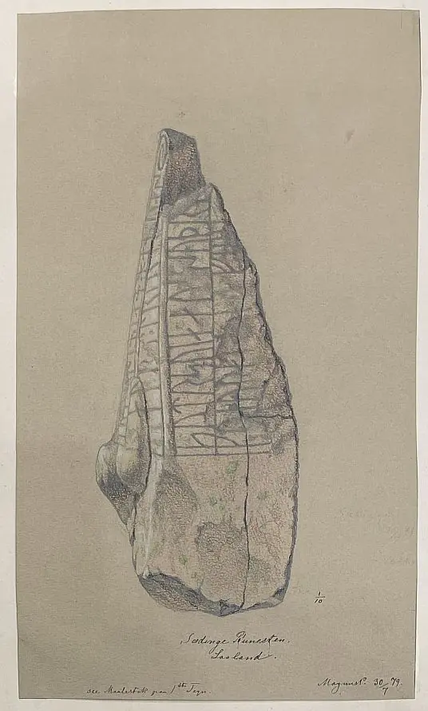
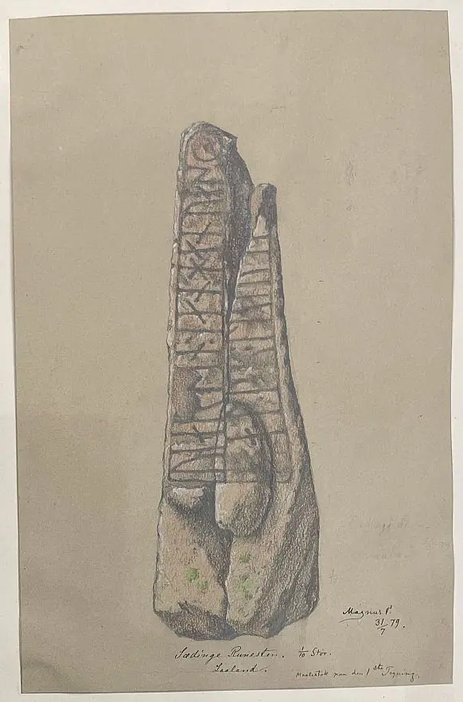
Außerdem finden sich hier noch zwei Zeichnungen, die er lediglich auf August 1894 datiert hat.
Magnus Petersen erwähnt in seinen im Jahr 1909 erschienenen Lebenserinnerungen, die den Titel ""Minder fra min Virksomhed paa Arkæologiens Omraade fra 1845 til 1908" tragen, auf der S. 51, dass er diesen Runenstein gezeichnet hat - "...derefter drog jeg til Laaland for at tegne Taagerup, Skovlænge, Tillitse og Sæddinge Runestenene...". Übersetzung: "...Dann ging ich nach Lolland, um die Runensteine Taagerup, Skovlänge, Tillitse und Sæddinge zu zeichnen...".
Zu diesem Runenstein macht er aber sehr ausführlich weitere Anmerkungen (übersetzt): "Beim letzten hatte ich einige Schwierigkeiten, ihn zu finden. Thorsen hatte mir gesagt, dass er bei Sæddinge Kirke sein sollte, aber als ich dort ankam, wusste niemand etwas darüber. Nach einigem Zögern erwischte ich eine alte Frau und fragte sie, ob sie etwas von einem alten Runenstein in der Nähe gehört hätte. Ja, ja, sagte sie, es könnte wahrscheinlich derjenige sein, der vor vielen Jahren in mehrere Teile gespalten und zum Nebbelunde Pfarrhof gebracht worden war, um dort für Zaunsteine verwendet zu werden. Es war eine schöne Geschichte, dachte ich, aber dann wanderte ich weiter nach Nebbelunde, wo ich erwartete, sie dort in den Zäunen oder als Stufen oder Schwellensteine im Pfarrhaus zu sehen; Glücklicherweise wurde für die Stümpfe jedoch keine Verwendung für einen derart nützlichen Zweck gefunden, ein vernünftiger Priester oder ein anderer Mann hätte vielleicht die große Menge an Schrift auf dem Stein entdecken und ihn so retten können. Aber ich fand ihn in einem beklagenswerten Zustand; an einem Rand des Gartens hinter dem Bauernhof, an einem sumpfigen Ort, wo aus einem Abfluss aus der Küche eine Menge unreines Wasser und Schmutz austrat; Hier lag er, in fünf Stücke zerhackt, und zwischen den Stümpfen wuchs eine üppige Menge Unkraut. Mit Hilfe eines Knechts habe ich den Bereich um den Stein herum freigeräumt und die Stücke eingesammelt. Es stellte sich nun heraus, dass es sich um einen beträchtlichen Stein mit einer Länge von über 3 Ellen handelte und auf den nach oben gerichteten Seiten eine lange und seltsame Inschrift trug.
Viele Jahre später, im Jahr 1893, wurde er schließlich nach
Maribo verlegt, um dort vor dem neuen Museum ausgestellt zu werden, und das
Nationalmuseum beauftragte mich mit der Leitung dieser Ausstellung. Dabei
entdeckte ich, dass sich auf der Seite (D), die viele Jahre lang nach unten in
der durchnässten Erde gelegen hatte und dadurch verborgen blieb, auch eine
Inschrift befand, die den Rest auf den anderen drei Seiten ergänzte. Es hieß,
dass eine Frau namens Thyre oder Turve diesen Stein zum Gedenken an ihren
Ehemann, einen unvergesslichen Ehrenmann, errichtete. Prof. Wimmer liest die
Inschrift wie folgt: Thyre ließ diesen Stein nach Viking, ihrem Ehepartner,
anfertigen. Er war der treueste der im Land ansässigen Südschweden, er kam nach
Süden, nach der Insel Lolland über das Meer im Norden, er war der beste der
Südschweden und unvergesslich."
Von Magnus Petersen finden sich in der Digitalen Sammlung Nationalmuseum Kopenhagen sieben weitere Zeichnungen. Hier drei Zeichnungen, die er auf den 30. bzw. 31.07.1879 datiert hat. Das sind aber sicherlich nur schlechte Fotos, bzw. Scans von meinen oben abgebildeten Fotos der Originale davon.
Eine weitere Zeichnung ist lediglich auf das Jahr 1893 datiert, aber seine erste Zeichnung der Seite D, auf der Stein ewig lag.
Nochmals drei Zeichnungen - von den Seiten B - C - D - sind von ihm auf den August 1894 datiert. Die Zeichnungen der Seite C und D sind wieder schlechte Fotos / Scans der o.a. Originale im Fundus von Ludv. F. A. Wimmer. Allerdings habe ich dort kein Foto der Seite B gemacht - übersehen von mir?
Alle sieben Zeichnungen jeweils Lizenz: Public Domain
Durch Marius Kristensen (*27.04.1869 - 02.11.1941, Hochschullehrer, Dänischer Sprachforscher)
Bildquelle: Denstoredanske.lex - Lizenz: Public Domain
wurde in dem Aufsatz mit dem Titel "Lålands og Falsters stednavne III" im Lolland-Falsters historiske Samfunds Aarbog for 1923 - S. 1-14 - auf der S. 12 eine Deutung der Inschrift abgegeben. Außerdem verweist er auf den südschwedischen Einfluss bei Ortsnamen auf der Insel Lolland.
Hans Andersen Kjær (*12.10.1873 - 29.09.1932, dänischer Archäologe)
Bildquelle: Wikipedia - Lizenz: Public Domain
schrieb im Lolland-Falsters historiske Samfunds Aarbog for 1928 den Artikel mit dem Titel "Oldtidsminderne og Reventlowerne paa Christianssæde (Pederstrup) (S. 1-23). Auf der S. 22 geht er ganz kurz auf diesen Runenstein ein und auf der S. 23 gibt er diese frühe Fotografie wieder.
Ivar Lindqvist (*31.12.1895 - 07.02.1985, schwedischer Sprachforscher) veröffentlichte in "Acta philologica Scandinavica, Band III, 1928-29" einen Artikel mit dem Titel "Två Låländska runinskrifter som mämna sverna" auf den S. 289-328. Im ersten Abschnitt auf den S. 289 bis 304 macht er Ausführungen zu "Sæddinge-Stenens Indskrift". Er beschäftigt sich ausführlich mit der Deutung der Inschrift. Zu zwei Passagen bringt er Fotos die er mit Abdrücken von Ludv. F. A. Wimmer, die dieser von der Steinoberfläche gemacht hatte, vergleicht.
Wie man hier sieht, kommt er zu abweichenden Lesungen. Bei dem Steinzustand auch keine wirkliche Überraschung. Die Ausführungen von Lindqvist wurden aber von anderen Forscher unterschiedlich bewertet und z.B. in verschiedenen Artikeln kristisiert.
Im Lolland-Falsters historiske Samfunds Aarbog for 1929 schreibt der Bauernhofbesitzer Frederik Grejsen den kurzen Artikel zu einer alten Sage mit dem Titel "Tykatbanken". Er schreibt auf der S. 134 (übersetzt): "Tykatbanken. Wenn jemand fragen möchte, wo Tykatbanken ist, wissen nur wenige es. Es befindet sich unmittelbar an der Stelle, an der der Runenstein von Sædinge gefunden wurde. Diese Örtlichkeit hat ihre alte Sage. Dort soll vor Hunderten von Jahren ein Freudenfeuer stattgefunden haben. Derjenige, der hier in den Flammen den Tod erleiden musste, hieß Tykat und war ein männlicher Troll. Der Legende nach kamen Menschen aus der Umgebung, um den Vorgang zu beobachten, aber was geschah? Als der Troll zum Feuer kam, konnte er nicht brennen. Die Leute standen da und wussten nicht weiter. Dann fuhren gleichzeitig ein Mann und eine Frau weg. Da ging ein weiser Mann hin, nahm den Strohstuhl, auf dem die schwangere Frau gesessen hatte, und warf ihn ins Feuer. Nun erst konnte der Troll brennen. Vor gut einem halben Jahrhundert wurde bei Grabungen auf dem Gelände Holzkohle gefunden."
Durch Lis Jacobsen (*29.01.1882 - 18.06.1961, dänische Runologin und Archäologin)
Bildquelle: Wikipedia - Lizenz: Public Domain
wurde 1929 ein Buch mit dem Titel "Svenskevældets fald" (Übersetzt: Der Fall der schwedischen Macht) herausgegeben. Darin schreibt sie auf den S. 98 bis 112 über diese Inschrift und kommt zu der Schlussfolgerung, dass die Interpretation der Inschrift durch Ludv. F. A. Wimmer nicht etwa nur in einzelnen Fällen zweifelhaft, sondern als Ganzes verfehlt ist! In der Interpretation der Inschrift von Ivar Lindqvist - siehe oben - sieht sie hingegen einen Fortschritt.
Otto Scheel (*07.03.1876 - 13.11.1954, evangelischer Theologe, Landeshistoriker und Hochschullehrer)
Bildquelle: Wikipedia - Lizenz: Public Domain
und Peter Paulsen (*08.10.1902 - 15.02.1985, deutscher Prähistoriker)
Bildquelle: Nachruf Peter Paulsen 1902-1985 - Lizenz: CC-BY-SA
gehen in ihrem Werk "Quellen zur Frage Schleswig-Haithabu im Rahmen der fränkischen, sächsischen und nordischen Beziehungen", 1930, auf den S. 9-11 auf diese Inschrift / diesen Runenstein ein. Sie geben die verschiedenen Lesungen von Ludv. F. A. Wimmer / Ivar Lindqvist und Lis Jacobsen wieder.
Danach erschien noch von Finnur Jónsson (*29.05.1858 - 30.03.1934, isländischer skandinavistischer Mediävist)
Bildquelle: Wikipedia - Lizenz: Public Domain
in der "Acta Philologica Scandinavica, 4. Jahrg., 1. Heft, 1929" auf den S. 49-64 eine Abhandlung mit dem Titel "Runelæsning og Runetolkning Sædingestenen". Er bezieht sich in seinem Aufsatz auf die Veröffentlichung von Lis Jacobsen mit dem "pompösen" Titel "Svenskevældets fald" - siehe oben - und ihre heftige Kritik darin an den Arbeiten von Ludv. F. A. Wimmer. Er geht auf die unterschiedlichen Deutungen zum Runenstein von Ludv. F. A. Wimmer / von Ivar Lindqvist und von Lis Jacobsen ein - siehe oben - und hier:
Er geht die einzelnen Deutungsversuche Seite für Seite durch und wägt deren Für und Wider ab. Ersichtlich ist auch für einen Laien, dass alle drei eine völlige Übereinstimmung z.B. in der Zeile A 1 haben, während es bei allen drei eine unterschiedliche Lesung in der Zeile A 3 gibt. Danach bringt er seine eigene Lesung, die er so wiedergibt.
Er schreibt darunter (übersetzt): "Dieser völlig natürliche, logische und einfache Text spricht für sich selbst. Er besteht aus folgendem: (1) Der Name, für den er errichtet wurde, (2) eine Beschreibung von diesem, wobei seine Zuverlässigkeit hervorgehoben wird, (3) seine Abstammung und (4) die Schlussfolgerung, die ein starkes Lob enthält, nämlich dass er denkwürdig war. Genau das sei doch der Grund für ein solches Denkmal." Weiter meint er, dass er eine vollständige Parallele zu Asfrid, die Tochter Odinkars, und Gnupa Olafsson in Schleswig sieht. Wahrscheinlich gäbe es viel mehr Beispiele für solche Ehen führt er aus. Der Verstorbene "Krok" war mit einer dänischen Frau verheiratet und "der zuverlässigste der Südschweden und Süddänen", gehörte also beiden Völkern an.
Die einzelnen Teile des Runensteins wurden nun mit Zement zusammengefügt und aufgestellt. Nur ein kleines Stück der Spitze - hier rot umrandet - das auf der Zeichnung von Jacob Kornerup noch erkennbar ist, verschwand zwischen 1859 und 1871. Es blieb verschwunden und tauchte auch später nicht mehr auf. Es wurde später - 1933 auf Geheiß von Erik Moltke (*04.04.1901 - 19.10.1984, Runologe, Historiker) - rekonstruiert und wieder angesetzt. Ein Foto in dem Zustand fand ich aber nicht.
Bildquelle: George Stephens - The old-northern runic Monuments of Scandinavia and England, Vol. II - 1867-68 - S. 780 - Lizenz: Public Domain.
Hierbei ging man aber dermaßen plump vor, dass man einzelne Runen abdeckte. Hierdurch war die Lesung der Schrift stark erschwert. Außerdem war er viel zu tief in die Erde eingelassen worden. Deshalb wurde er 1933 auf Geheiß von Erik Moltke (*04.04.1901 - 19.10.1984, Runologe, Historiker) erneut zerlegt, das fehlende Teil der Spitze rekonstruiert und der Stein nun unter Beachtung der Inschrift und des Charakters des Steines wieder restauriert. Er hat den Runenstein am 05.09.1933 und nochmals am 05.09.1935 fotografiert (Laut Danmarks Runeindskrifter, Jacobsen/Moltke, 1942, Textband, Nr. 217, Spalte 265). Seine Fotos - insgesamt 25 Stück - sind in der Digitalen Sammlung Nationalmuseum Kopenhagen verfügbar - Lizenz: CC-BY-SA. Dort sind sie aber alle als von 1933 deklariert. Das wird so nicht stimmen, da es deutliche Unterschiede bei den einzelnen Fotos in der Qualität gibt. Unter den vielen Fotos ist aber keine Aufnahme, die das rekonstruierte Bruchstück an der Spitze der Seite C zeigt.
Da es doch eine Menge Fotos sind, will ich mich auf eine kleine Auswahl beschränken. Alle Fotos auf einmal finden sich hier ► Digitale Sammlung Nationalmuseum Kopenhagen
Hier die Seiten A und B - B und C
Die Seiten Seiten C und D - D und A
Diese beiden Fotos - Seite A und B / Seite C und D - könnten aus dem Jahr 1935 sein, da sie sich von den anderen deutlich unterscheiden.
Die Inschrift legt offenbar Zeugnis ab über eine Siedlung schwedischer Wikinger auf der Insel Lolland im 10. Jahrhundert. Die Bezeichnung "Sonderschweden" steht wohl für eine Gruppierung, die sich von den übrigen Schweden abgespalten hatte.
Die Runenschrift verteilt sich schön auf alle vier Steinseiten, die aber inzwischen sehr verwittert sind. Früher stand der Runenstein mit der Seite C gegen die Wand des Museums errichtet - siehe meine Fotos im linken Frame. Die Spitze der Seiten AB (siehe unten) und D weist jeweils eine Verzierung mittels einer einfachen Spirale auf.

(aus Moltke - Runerne i Danmark og deres Oprindelse - S. 220 - Nr. 17)
Die Inschrift, die auf die Zeit 970 - 1020 datiert wird, liest man wie folgt - von mir visualisiert:
Bildquelle: siehe oben bei Ludv. F. A. Wimmer - Lizenz: Public Domain
Im Vorfeld zu dem 2016 erschienenen Buch von Lisbeth M. Imer (*1973, Runologin am Nationalmuseum Kopenhagen) "Danmarks Runesten - en fortælling" reiste sie mit dem Fotografen Roberto Fortuna zur Bestandsaufnahme durch die Lande. Dieser hat die Runensteine mit Schräglicht aufgenommen und darüber wirklich herausragende Fotos erzielt.
Das erste Foto zeigt den Fotografen Roberto Fortuna bei seiner Arbeit am Museum (rechts davon Lisbeth M. Imer - Fotograf unbekannt) und gibt auch mal den Aufwand wieder, der betrieben werden musss / das Equipment das benötigt wird, um solch aussagekräftige Fotos von Runensteinen und deren oft schwer erkennbaren Runeninschriften zu machen - Internetfund im Zusammenhang mit dem damaligen Blog - leider nicht mehr abrufbar - https://natmus.dk/presse-og-nyheder/nyhedsarkiv/2012/runesten-skal-fotograferes/.
Den Runenstein wurde zunächst an seinem langjährigen Standort außerhalb des Museums fotografiert - die Aufnahmen stammen vom 05. März 2012.
Diese Fotos am neuen Standort im Museum hat der Fotograf am 14. Januar 2015 aufgenommen. Das kleine 1933 rekonstruierte Stück - siehe oben - fehlt hier aber wieder, wie man sieht.
Lizenz: CC-BY-SA - Fotos von Roberto Fortuna aus: Digitale Sammlung Nationalmuseum Kopenhagen - Foto 1 - Foto 2 - Foto 3 - Foto 4
Lisbeth M. Imer schreibt in ihrem Buch mit dem Titel "Danmarks Runesten - en fortælling" auf den S. 235-237 über diesen Runenstein. Sie betont abschließend, dass die Lesung und die Deutung der Inschrift sehr unsicher ist.
Zu den links eingestellten (alten) Fotos: Ein Mitarbeiter des Museums erlaubte mir am 24.05.2005 zum fotografieren über den Seiteneingang der Museumsgade nahe an die Runensteine heranzugehen zu können. "Es sollen doch gute Fotos werden!", meinte der freundliche Herr - herzlichen Dank dafür!
Bei meiner Rückfahrt von meiner Wikinger-Tour 2016 am Mittwoch, 31.08.2016, war das Museum leider geschlossen (siehe Foto Maribo_Info unten), so dass ich die beiden nach innen versetzten Runensteine nicht sehen konnte.
Am 02.09.2017 war es mir kurzfristig möglich dem Museum in Maribo einen erneuten Besuch abzustatten. Endlich hat es mal geklappt! Die beiden Runensteine sind im Foyer aufgestellt und konnten von mir fotografiert werden, ohne dass ich Eintrittsgeld für das Museum - mir fehlte schlicht die Zeit - hätte zahlen müssen - Dankeschön!


Die Infos zu diesem Runenstein von der Homepage der dänischen Runendatenbank findet man hier.
Der entsprechende Eintrag zu dem Runenstein in "Fund og Fortidsminder" ist hier verlinkt.
Über diesen Link finden sich zu dem Runenstein Informationen des Forschungsprojektes "Runes" der Akademie der Wissenschaften zu Göttingen.
Über diese Webseite kann man eine hochauflösende 3D Ansicht des Runensteins aufrufen. Bei jeder 3D Ansicht hat man Einstellmöglichkeiten um Änderungen vorzunehmen: Neigung / Beleuchtung / Hintergrund. Der Autor - hat leider keinerlei Infos zu seiner Person hinterlegt - gibt auch Anleitungen zur Maus- / Fingersteuerung - Alle Achtung - tolle Arbeit! Vielen Dank!
Am Fundort des Runensteins von Sædinge - er liegt auf der rechten Seite zwischen Vesterbyvej und der Autobahnzufahrt, schräg gegenüber dem Anwesen Holebyvej 4 in DK-4970 Rødby - war 1945 auf Initiative des Lokalhistorikers Jens Wolsing aus Holeby ein Gedenkstein mit der Inschrift "På Tykat Banken, faa meter nord for denne sten, fandtes Sædinge-Runestenen i 1854. Den flyttedes til Nebbelunde og i 1894 til Stiftsmuseet i Maribo. Stenen her rejstes 1945" abgelegt worden. - Übersetzung: "Auf Tykat Banken, ein paar Meter nördlich dieses Steins, wurde 1854 der Runenstein von Sædinge gefunden. Er wurde nach Nebbelunde verlegt und 1894 an das Stiftsmuseet in Maribo übergeben. Dieser Stein wurde 1945 errichtet."
Bildquelle: Google Maps
Nun wurde die längst verwitterte Inschrift in 2020 erneuert. Die Inschrift wurde durch Ann-Sofie Krag von IB-Maler aus Holeby nachgezeichnet. Dazu gab es am Mittwoch, 03. Juni 2020, einen bebilderten Bericht in der Folketidende (Lolland-Redaktion), der über die Sammlungen innerhalb von "arkiv.dk" abgerufen werden kann. Über diesen Beitrag bei "arkiv.dk" kann man das Aussehen des Steins vor und auch nach der Restaurierung sehen.
Am 10.10.2023 trafen sich 34 Runologen / Sprachforscher im Stiftsmuseet in Maribo um der verwitterten und sehr umstrittenen Inschrift Neues zu entlocken. In der Zeitung "Lolland Falster Folketidende" fand sich dazu am 11.10.2023 ein Artikel mit Überschrift "Over 30 felt-runologer var tirsdag i Maribo for blandt andet at tyde, hvad der står på runestenen, der blev fundet ved Sædinge på Lolland".
Zu den Ergebnissen dieses Symposiums habe ich heute (27.07.2024) mal bei Michael Lerche Nielsen - Associate Professor - Department of Nordic Studies and Linguistics - Universität Kopenhagen angefragt.
Literaturhinweise:
Runenstein - Nachweis internationaler Verbindungen? - Webseite Museum Lolland-Falster
Marius Kristensen - Lolland-Falsters historiske Samfunds Aarbog for 1923 - Lålands og Falsters stednavne III - S. 1-14
Hans Kjær - Lolland-Falsters historiske Samfunds Aarbog for 1928 - Oldtidsminderne og Reventlowerne paa Christianssæde (Pederstrup) - S. 1-23
Lis Jacobsen - Svenskevældets fald - Studier til Danmarks oldhistorie i filologisk og runologisk lys - 1929
Finnur Jónsson - Acta Philologica Scandinavica, 4. Jahrg., 1. Heft, 1929 - Runelæsning og Runetolkning Sædingestenen - S. 49-64
Otto Scheel / Peter Paulsen - Quellen zur Frage Schleswig-Haithabu im Rahmen der fränkischen, sächsischen und nordischen Beziehungen - 1930 - S. 9-11
Lis Jacobsen - Syv Runesten-Tolkninger - Aarbøger for Nordisk Oldkyndighed og Historie - 1935 - I. Sædinge-Stenen - S. 169-185
Carl Christian Haugner - Lollands Oldtidsminder - 1941 - S. 132 ff.
Niels Åge Nielsen - Danske Runeindskrifter - 1983 - Sædinge-Stenen - S. 132-135
Karen Løkkegaard Poulsen - Runesten på Lolland-Falster - in: Lolland-Falsters Historiske Samfunds Årbog - 1989 - S. 65-86
Magnus Källström - Folkstamsbeteckningen syddaner på Sædingestenen - in: Namn och bygd - Lund - Volume 99 / 2011 - S. 109-114
Lisbeth M. Imer - Danmarks Runesten - en fortælling - S. 235-237
Der Silberschatz von Duesminde
Im Januar 2002 wurde von Henrik Schilling, damals Kurator des Lolland-Falsters Stiftsmuseum, Nachuntersuchungen am Fundort eines vor vierzig Jahren sporadisch aufgelesenen Hortes von Gold- und Silberringen des späten 9. Jahrhunderts n.Chr. veranlasst. Gefunden wurde dabei in Duesminde/Lolland der bislang reichste Wikingerschatz mit hochkarätigem karolingischem Silberschmuck, insgesamt mehr als 1.300 Gramm.
Hierzu ist der Katalog "Die Macht des Silbers. Karolingische Schätze im Norden" im Verlag Schnell & Steiner, 2005, erschienen.
Egon Wamers (*04.01.1952, deutscher Frühmittelalter-Archäologe) führt darin in seinem Artikel "Charakter des Schatzes" an: "...In Karolingische Währung umgerechnet entsprachen die 1.300 g Silber etwa 810 Denaren; dafür erhielt man auf dem Kontinent im 9. Jahrhundert etwa 10 Schwerter mit Scheide, 55 Kühe, 3 Pferde oder 5 Sklaven..." Er hält es für sehr wahrscheinlich, dass es sich bei dem Schatz um das Metalldepot eines Goldschmieds oder Händlers gehandelt hat.
Hier eine Verlinkung zum kompletten Ausstellungskatalog aus 2005 auf "www.academia.edu" - der entsprechende Artikel findet sich auf den S. 125 - 148.
Hier noch ein paar historische Ansichten des Museumgebäudes von 1899.
Bildquelle: Königliche Bibliothek in Kopenhagen - Lizenz: Public Domain - Aufnahmedatum unbekannt
Bildquelle: Königliche Bibliothek in Kopenhagen - Lizenz: Public Domain - Aufnahmedatum unbekannt
Bildquelle: Königliche Bibliothek in Kopenhagen - Danmark set fra Luften - Urheber: Sylvest Jensen Luftfoto - zw. 1946 - 1969 aufgenommen - Lizenz: Public Domain
Bildquelle: Königliche Bibliothek in Kopenhagen - Danmark set fra Luften - Urheber: Sylvest Jensen Luftfoto - zw. 1946 - 1969 aufgenommen - Lizenz: Public Domain